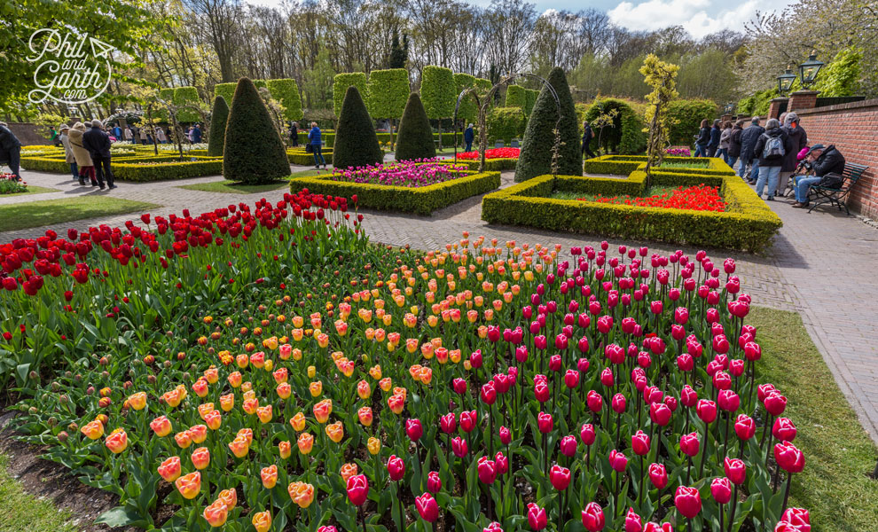
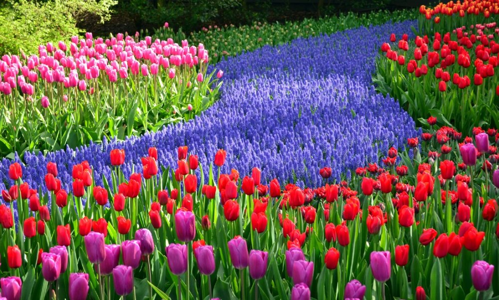

NEEDERLAND

The History of the Netherlands is a history of seafaring people thriving on a lowland river delta on the North Sea in northwestern Europe. Records begin with the four centuries during which the region formed a militarized border zone of the Roman Empire. This came under increasing pressure from Germanic peoples moving westwards. As Roman power collapsed and the Middle Ages began, three dominant Germanic peoples coalesced in the area, Frisians in the north and coastal areas, Low Saxons in the northeast, and the Franks in the south.
The Netherlands was neutral during the First World War, but during the Second World War, it was invaded and occupied by Nazi Germany. The Nazis, including many collaborators, rounded up and killed almost all of the country's Jewish population. When the Dutch resistance increased, the Nazis cut off food supplies to much of the country, causing severe starvation in 1944–45. In 1942, the Dutch East Indies were conquered by Japan, but prior to this the Dutch destroyed the oil wells for which Japan was desperate. Indonesia proclaimed its independence from the Netherlands in 1945, followed by Suriname in 1975. The post-war years saw rapid economic recovery (helped by the American Marshall Plan), followed by the introduction of a welfare state during an era of peace and prosperity. The Netherlands formed a new economic alliance with Belgium and Luxembourg, the Benelux, and all three became founding members of the European Union and NATO. In recent decades, the Dutch economy has been closely linked to that of Germany and is highly prosperous. The four countries adopted the Euro on 1 January 2002, along with eight other EU member states.
- Van Gogh Museum
- Keukenhof
The tourist places that i will got to in New York City is:
The tourist places that i will got to in New York City is:
Van Gogh Museum
History:
The Van Gogh Museum is a Dutch art museum dedicated to the works of Vincent van Gogh and his contemporaries in Amsterdam; it is located at the Museum Square in the borough Amsterdam South, close to the Stedelijk Museum, the Rijksmuseum, and the Concertgebouw.[7] The museum opened on 2 June 1973,[2] and its buildings were designed by Gerrit Rietveld and Kisho Kurokawa.

The museum contains the largest collection of Van Gogh's paintings and drawings in the world. In 2017, the museum had 2.3 million visitors, and was the most visited museum in the Netherlands, and the 23rd most visited art museum in the world. In 2019, the Van Gogh Museum launched the Meet Vincent Van Gogh Experience, a technology-driven "immersive exhibition" on Van Gogh's life and works, which has toured globally.

Restaurants:
Museum Cafe Le Tambourin:

What you’ll love about Museum Cafe Le Tambourin:: The stylish Van Gogh Museum café Le Tambourin offers a range of delicious refreshments and hot and cold dishes.
Specialities include salads, home-made lasagne and quiche, vegetarian dishes and a selection of cakes and pastries. Whilst visiting Le Tambourin, visitors can enjoy a fine view of Museumplein and the Kurokawa Wing. see more.Madam Pancake:

What you’ll love about Madam Pancake: Madam Pancake offers the well-known American pancakes but with an artisan Dutch twist. Entirely traditionally prepared, tasty and with an over the top today’s new look!
Our American pancakes, either sweet or savory flavored, are richly topped off with the most beautiful toppings ranging from fresh fruits, homemade syrups, colorful creams to a perfectly poached egg. Each pancake on your plate is freshly served and traditionally prepared by chef Mohamed Mahraoui, famous for other food concepts, such as Pita Queen and restaurant Bo Cinq in Amsterdam. All pancakes have been extensively tested on taste, color and the diversity of ingredients...to sum it all up: 100% pure enjoyment! see more.The Burger Room:

What you’ll love about The Burguer Room: It is a Burger Restaurant and Cocktailbar inspired by The Wizard Of Oz located in the heart of Amsterdams Fashion and Museum District. It serve top notch burgers made of prime beef and cocktails stirred and shaken by our mixologists Besides prime beef burgers it also serve a range of bar bites, salads, wizardly delicious milkshakes and desserts. see more.
Keukenhof
History:
The history of Keukenhof dates back to the 15th century. Countess Jacoba van Beieren [Jacqueline of Bavaria] (1401-1436) gathered fruit and vegetables from the Keukenduin [kitchen dunes] for the kitchen of Teylingen Castle. Keukenhof Castle was built in 1641 and the estate grew to encompass an area of over 200 hectares.Landscape architects Jan David Zocher and his son Louis Paul Zocher, who also designed Amsterdam's Vondelpark, redesigned the castle gardens in 1857. That park, in the English landscape style, still constitutes the basis of Keukenhof.
In 1949 a group of 20 leading flower bulb growers and exporters came up with the plan to use the estate to exhibit spring-flowering bulbs, signaling the birth of Keukenhof as a spring park. The park opened its gates to the public in 1950 and was an instant success, with 236,000 visitors in the first year alone. 2020 will be the 71th edition of Keukenhof, with A World Of Colours as its theme. During the past 70 years Keukenhof has developed into a world-famous attraction.
Restaurants:
Trattoria Panini:

What you’ll love about Trattoria Panini: Authentic Italian Trattoria in Leiden. Delicious Italian dishes, made with fresh ingredients, love and passion. Freshly kneaded bread, pizza and pasta by hand daily. see more.